A preview of JWST images of NGC objects, automatically colored using available filters
Image triplets are NIRCam, NIRCam+MIRI, MIRI. For NIRCam+MIRI images red = MIRI. The point is to make a fast, automatic process with fixed parameters. No manual touch, so alignment issues are expected.
By yuval


 table
. For updates on new images follow the bot
table
. For updates on new images follow the bot 
2024-05-12 NGC3137, available filters: [ 150 187 300 335 770 2100]

2024-05-12 NGC3059, available filters: [ 335 770 2100]
2023-04-26 SERPENS-MAIN (not NGC), available filters: [140 210 360 480]
2024-05-04 NGC2997, available filters: [ 150 187 300 335 770 2100]
2024-04-23 NGC-2525, available filters: [ 90 150 277]
2024-05-01 NGC3368, available filters: [ 150 187 300 335 770 2100]
2024-04-30 NGC2903, available filters: [ 150 187 300 335 770 2100]
2024-04-30 NGC3521, available filters: [ 150 187 300 335 770 2100]
2023-04-27 NGC-2992, available filters: [ 560 1000 1500 1800 2100]
2023-04-28 CLOUDEF-CENTER (not NGC), available filters: [ 770 2100]
2023-03-19 CLOUDEF-CENTER (not NGC), available filters: [ 162 210 360 480 770 2100]
2023-04-25 NGC-602, available filters: [115 140 150 210 277 335 356 480]
2023-04-15 BRICK-IKP2016-G0.253+0.015 (not NGC), available filters: [ 187 212 410 444 466 2550]
2024-04-25 NGC3507, available filters: [ 150 187 300 335 770 2100]
2024-04-24 NGC3344, available filters: [ 770 2100]
2024-04-24 NGC3239, available filters: [ 150 187 300 335 770 2100]
2023-04-20 SN-2005IP (not NGC), available filters: [ 560 770 1000]
2023-04-21 LDN-663 (not NGC), available filters: [ 70 90 115 150 200 277 356 444]

2024-04-21 NGC2775, available filters: [ 150 187 300 335 770 2100]
2023-04-19 SN-2010JL (not NGC), available filters: [ 560 770 1000]
2023-04-18 NGC3972, available filters: [115 356]
2023-04-18 M-81 (NGC-3031), available filters: [ 90 115 150 277 356 444]
2023-04-18 LDN-483 (not NGC), available filters: [ 560 770 1000]
2023-04-16 LDN-663 (not NGC), available filters: [ 70 90 300 356]
2024-04-12 SN2023dbc (not NGC), available filters: [ 770 1000 1500 2100]
2023-04-13 SGRA (not NGC), available filters: [210 480]
2023-04-08 LEO-P (not NGC), available filters: [ 90 277]
2024-04-10 NGC2566, available filters: [ 150 200 300 335 770 2100]
2023-04-10 M-4-shift (NGC-6121), available filters: [150 322]
2023-04-09 M-4 (NGC-6121), available filters: [150 322]
2024-04-10 SN2017gkp (not NGC), available filters: [ 770 1000 1500 2100]
2024-04-08 SN2017gci (not NGC), available filters: [ 770 1000 1500 2100]
2023-03-31 CL-WESTERLUND-1 (not NGC), available filters: [115 150 164 187 200 212 277 323 444 466]

2023-04-04 CL-WESTERLUND-1 (not NGC), available filters: [ 770 1000 1130]
2023-04-01 M-81-MIRI (NGC-3031), available filters: [ 560 770 1130]
2024-04-03 IR07251 (not NGC), available filters: [ 560 770 1500]
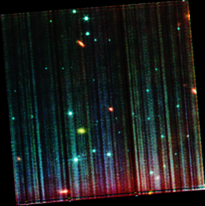
2024-04-02 SN2014bi (not NGC), available filters: [ 770 1000 1500 2100]
2023-03-28 CLOUDEF-REFERENCE (not NGC), available filters: [ 770 2100]
2023-03-24 NGC-4258-MIRI, available filters: [ 560 770 1130]
2023-03-21 HH-111-IRS (not NGC), available filters: [ 560 770 1130]
2023-03-19 CENA-BACKGR (not NGC), available filters: [ 560 770 1130]
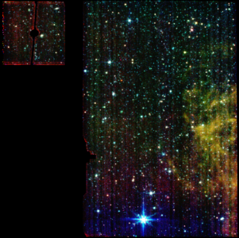
2023-03-20 CLOUDEF-REFERENCE (not NGC), available filters: [162 210 360 480]
2023-03-19 CENA-NUC (not NGC), available filters: [ 560 770 1130]
2023-03-17 CRAB-NEBULA-FIL2 (not NGC), available filters: [ 770 1500 2550]
2023-03-17 CRAB-NEBULA-FIL1 (not NGC), available filters: [ 770 1500 2550]
2023-03-17 GALCEN (not NGC), available filters: [212 444]
2024-03-16 SN2019esa (not NGC), available filters: [ 770 1000 1500 2100]
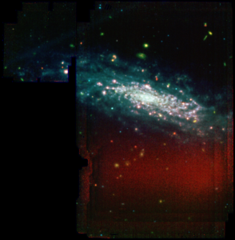
2024-03-15 SN2023ixf (not NGC), available filters: [ 770 1000 1500 2100]
2024-03-16 SN2006bc (not NGC), available filters: [ 770 1000 1500 2100]
2024-03-15 SN2018hna (not NGC), available filters: [ 770 1000 1500 2100]
2023-03-13 NGC5728, available filters: [ 560 1000 1500]
2024-03-10 IR07251 (not NGC), available filters: [150 200 277 356]
2023-03-09 RM312 (not NGC), available filters: [ 90 150 277 444]

2024-03-07 SN2019oys (not NGC), available filters: [ 770 1000 1500 2100]
2023-03-06 NGC5236-NIRCAM, available filters: [115 187 200 300 335 444]
2023-03-06 NGC5236-MIRI, available filters: [560 770]
2023-03-03 NGC-5728, available filters: [ 560 1000 1500 1800 2100]
2023-03-02 NGC-5135, available filters: [ 560 1000 1500 1800 2100]
2023-03-01 NGC-2024, available filters: [ 70 115 140 182 356 360 430 444]
2024-02-28 SNAP-2 (not NGC), available filters: [ 560 770 1000]
2023-02-24 CRAB-NEBULA (not NGC), available filters: [ 560 1130 1800 2100]
2023-02-21 N5584, available filters: [ 90 150 277]
2024-02-13 SN1993J (not NGC), available filters: [ 770 1000 1500 2100]
2023-02-08 NGC4536, available filters: [115 444]

2024-02-08 NGC2283, available filters: [ 150 187 300 335 770 2100]

2024-02-06 NGC-4303-TILE-1, available filters: [ 200 300 335 360 770 1000 1130 2100]
2024-02-05 NGC1637, available filters: [ 150 187 300 335 770 2100]
2024-01-27 NGC0598NIRCAM, available filters: [210 430]
2023-01-22 NGC628-NIRCAM, available filters: [200 444]
2023-01-15 NGC628-NIRCAM, available filters: [150 187 277 335 444]
2023-01-10 MESSIER-101 (NGC-6341), available filters: [200 212 300 335 360]
2024-01-17 NGC1792, available filters: [ 150 187 300 335 770 2100]
2023-01-15 NGC628-MIRI, available filters: [560 770]
2024-01-10 NGC-4321, available filters: [ 200 300 335 360 770 1000 1130 2100]

2024-01-09 NGC1808, available filters: [ 150 187 300 335 770 2100]
2023-01-06 M31-NIRCAM-PREIMAGING (NGC-224), available filters: [150 277]
2024-01-08 NGC1068, available filters: [ 150 187 300 335 770 2100]
2023-12-27 NGC2090, available filters: [ 150 187 300 335 770 2100]

2023-12-27 NGC1097, available filters: [ 150 187 300 335 770 2100]
2022-12-23 NGC891-EXTRAPLANAR, available filters: [ 70 277 770]

2023-12-09 2022ACKO (NGC-1300), available filters: [ 560 770 1000]
2022-11-26 NGC-3227, available filters: [ 560 1000 1500 1800 2100]
2023-12-04 NGC-253-IM-CENTER, available filters: [212 335]
2023-11-25 NGC1511, available filters: [ 150 187 300 335 770 2100]
2022-11-21 CASSIOPEIA-A-KNOT2 (not NGC), available filters: [ 560 770 1500]
2022-11-21 CASSIOPEIA-A-KNOT3 (not NGC), available filters: [ 560 770 1500]
2022-11-21 CASSIOPEIA-A-KNOT1 (not NGC), available filters: [ 560 770 1500]

2022-11-16 NGC-253, available filters: [ 90 115 150 277 356 444]
2022-11-07 HH212-POS1 (not NGC), available filters: [164 210 335 460 466 470]
2022-11-07 HH212-POS2 (not NGC), available filters: [164 210 212 335 460 466]
2022-11-05 NGC7250, available filters: [115 444]
2022-11-05 CASSIOPEIA-A-CENTER (not NGC), available filters: [162 356 444]
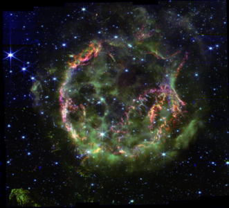
2023-11-04 NGC-0253, available filters: [ 770 2100]
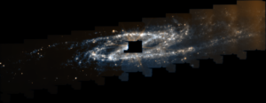
2022-11-04 NGC-7172, available filters: [ 560 1000 1500 1800 2100]
2022-10-31 CRAB-NEBULA-NIRCAM (not NGC), available filters: [162 480]
2023-09-22 SGRA (not NGC), available filters: [210 480]
2023-10-28 NGC0300NIRCAM, available filters: [200 444]
2022-10-26 CASSIOPEIA-A-2-RETURN (not NGC), available filters: [ 560 770 1000 1130 1280 1800 2100 2550]
2022-10-26 CASSIOPEIA-A-3-RETURN (not NGC), available filters: [ 560 770 1000 1130 1280 1800 2100 2550]

2022-10-26 CASSIOPEIA-A-1-RETURN (not NGC), available filters: [ 560 770 1000 1130 1280 1800 2100 2550]
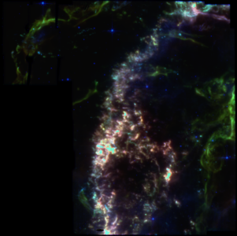
2022-10-26 LDN-694 (not NGC), available filters: [ 90 356]
2022-10-24 HH110BOW (not NGC), available filters: [212 460 560]

2023-10-20 NGC7793NIRCAM, available filters: [200 444]
2022-10-18 M-82-IM-CENTER (NGC-3034), available filters: [140 164 212 250 335 360]

2022-10-16 NGC-300, available filters: [ 90 115 150 277 356 444]

2022-10-10 NGC-346-TILE-6, available filters: [ 90 115 150 187 200 277 335 356 444 480 770 1000 1130 1500
2100]
2023-10-11 NGC1546, available filters: [ 150 187 300 335 770 2100]

2022-10-10 NGC-346, available filters: [ 770 1000 1130 1500 2100]
2023-10-05 NGC1809, available filters: [ 150 187 300 335 770 2100]
2023-10-04 IC5273 (not NGC), available filters: [ 150 187 300 335 770 2100]
2023-10-04 NGC7456, available filters: [ 150 187 300 335 770 2100]
2022-10-03 NGC-2403, available filters: [ 90 115 150 277 356 444]
2023-03-25 M-106 (NGC-4258), available filters: [162 164 182 187 210 212 300 335 360 430 444 466]

2022-09-20 SN-2004ET (NGC-6946), available filters: [ 560 1000 1130 1280 1500 1800 2100 2550]

2022-09-20 SN-2017EAW (NGC-6946), available filters: [ 560 1000 1130 1280 1500 1800 2100 2550]

2022-09-20 LDN-694 (not NGC), available filters: [ 70 90 115 150 200 277 356 444]
2022-09-14 BRICK (not NGC), available filters: [200 444]

2022-09-20 SNAKE-FIELD-2 (not NGC), available filters: [115 356 444]

2022-09-19 GALCEN (not NGC), available filters: [115 212 323 444]

2022-09-14 NGC-104, available filters: [150 322]
2022-09-04 NGC-6822-MIRI-TILE-2-COPY, available filters: [ 140 335 444 2100]

2022-09-15 NGC-6822-MIRI-TILE-2-COPY, available filters: [ 115 140 150 200 277 335 356 444 770 1000 1500 2100]


2022-09-14 CL-WESTERLUND-CF (not NGC), available filters: [ 115 277 770 1000 1130]

2022-09-14 LDN-694 (not NGC), available filters: [ 70 90 300 356]

2023-09-14 NGC1559, available filters: [ 150 187 300 335 770 2100]

2022-09-05 PREIMAGING+BRICK13 (NGC-224), available filters: [115 250]
2022-09-04 NGC-6822-MIRI, available filters: [ 770 1000 1500 2100]

2022-09-05 NGC-6822-NIRCAM, available filters: [115 200 356 444]

2022-09-05 NGC-6822-NIRCAM-TILE-1, available filters: [ 115 200 356 444 1000 1500]

2022-09-01 SN-1987A (not NGC), available filters: [150 164 200 212 323 356 444]

2022-08-27 SNAKE-FIELD-1 (not NGC), available filters: [200 356 444]
2022-08-28 IC348-MOSAIC (not NGC), available filters: [140 162 182 277 360 444]

2022-08-28 BRICK-IKP2016-G0.253+0.015 (not NGC), available filters: [ 187 212 444 466 2550]

2022-08-28 HH211NIRCAM (not NGC), available filters: [162 164 210 212 323 335 460 466 470]
2022-08-19 M31-NIRCAM-PREIMAGING (NGC-224), available filters: [150 277]

2023-08-22 2022ACKO (NGC-1300), available filters: [ 560 770 1000]

2022-08-20 NGC6720, available filters: [ 560 770 1000 1130 1280 1500 1800 2100 2550]
2022-08-18 M-33 (NGC-598), available filters: [ 90 200 335 444 560 2100]


2022-08-17 PSRJ1748-2021B (NGC-6440), available filters: [277 444]

2023-08-18 NGC0300MIRI, available filters: [1000 2100]
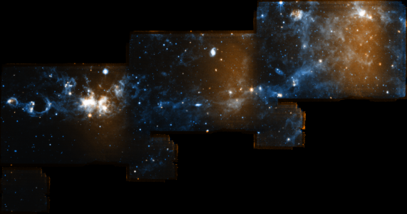
2022-08-15 NGC891-DISK-NORTH3, available filters: [150 277]
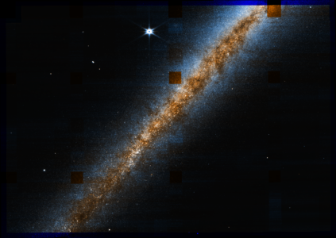
2022-08-15 NGC891-DISK-NORTH, available filters: [150 277]

2022-08-15 NGC891-DISK-NORTH1, available filters: [150 277]
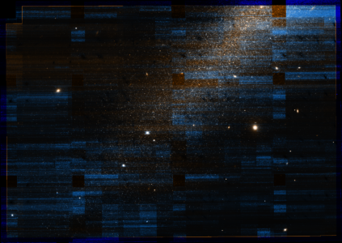
2022-08-14 CASSIOPEIA-A-CENTER-IFU (not NGC), available filters: [1130 1500]

2022-08-10 NGC-1052-MIRI, available filters: [ 560 770 1130]
2022-08-10 NAME-GAL-CENTER (not NGC), available filters: [158 182 360]

2023-08-09 NGC0598MIRI-BRIGHT2, available filters: [1000 2100]

2023-08-09 NGC0598MIRI-BRIGHT1, available filters: [1000 2100]
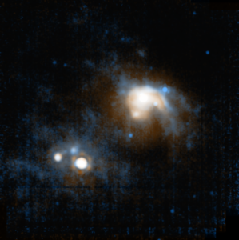
2022-08-04 CASSIOPEIA-A-CENTER-MIRI (not NGC), available filters: [ 560 770 1000 1130 1280 1800 2100 2550]
2023-08-09 NGC0598MIRI, available filters: [1000 2100]
2023-05-24 HH46 (not NGC), available filters: [115 187 200 335 444]
2022-08-04 NGC6720, available filters: [162 212 300 335]

2022-07-31 LDN-57 (not NGC), available filters: [ 70 90 115 150 200 277 300 356 444]
2022-07-26 NGC-346-SHORT, available filters: [ 90 115 182 187 277 356 430 444]

2023-07-17 NGC7793MIRI, available filters: [1000 2100]
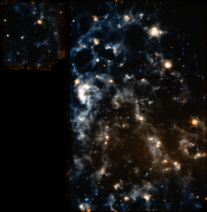
2022-07-16 NGC-346, available filters: [ 115 187 200 277 335 444 770 1000 1500]

2022-07-16 NGC3603-EMPT+TA+SPITZER, available filters: [150 182 187 277 430 444]
2022-07-16 SN-1987A (not NGC), available filters: [ 115 140 150 200 277 335 356 444 560 770 1000 1800 2550]

2022-07-11 WESTERLUND2-DIST-CORE-FULL (not NGC), available filters: [115 140 162 182 187 210 300 335 360 444 466]
2022-07-04 NGC6720-MRS-POSITION-2, available filters: [ 770 1000 1130]
2022-07-04 SOMBRERO-MIRI (NGC-4594), available filters: [ 560 770 1130]
2022-07-04 NGC6720-MRS-POSITION-1, available filters: [ 770 1000 1130]
2023-07-11, 2022-07-06 IC-5332 (not NGC), available filters: [ 200 300 335 360 770 1000 1130 2100]


2023-04-06 OPH-CORE-Tile-2 (not NGC), available filters: [115 187 200 335 444 470]
2023-03-07 OPH-CORE (not NGC), available filters: [115 187 200 444 470]
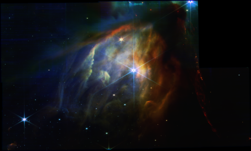
2023-04-05 OPH-CORE-Tile-4 (not NGC), available filters: [115 187 200 335 444 470]
2022-07-02 VV-191 (not NGC), available filters: [ 90 150 356 444]

2022-06-29 NGC-5728, available filters: [ 560 1000 1500 1800 2100]
2022-06-30 NGC-7172, available filters: [ 560 1000 1500 1800 2100]

2022-06-29 NGC-5135, available filters: [ 560 1000 1500 1800 2100]

2023-06-24 SN2022AAIQ (NGC-5631), available filters: [ 560 770 1000]
2023-06-18 NGC-4254, available filters: [ 200 300 335 360 770 1000 1130 2100]


2023-05-18 NGC-3351, available filters: [ 200 300 335 360 770 1000 1130 2100]


2023-05-09 SNH0pe-2b (not NGC), available filters: [ 90 150 200 277 356 444]

2023-04-22 SNH0pe-2b (not NGC), available filters: [ 90 150 200 277 356 444]
2023-05-07 NGC-2835, available filters: [ 200 300 335 360 770 1000 1130 2100]

2023-04-03 SN2022AAIQ (NGC-5631), available filters: [ 560 770 1000]

2023-02-28 NGC-5068, available filters: [ 200 300 335 360 770 1000 1130 2100]


2022-09-01 LDN-1527 (not NGC), available filters: [ 770 1280 1800]

2023-02-08 NGC-1672, available filters: [ 200 300 335 360 770 1000 1130 2100]
2023-02-08 NGC-4535, available filters: [ 200 300 335 360 770 1000 1130 2100]

2023-01-23 HH-30-MIRI (not NGC), available filters: [ 770 1280 2100]

2023-02-04 NGC-1512, available filters: [ 200 300 335 360 770 1000 1130 2100]


2023-01-29 2022ACKO (NGC-1300), available filters: [ 560 770 1000]

2023-01-25 NGC-1087, available filters: [ 200 300 335 360 770 1000 1130 2100]


2023-01-25 NGC-1300, available filters: [ 200 300 335 360 770 1000 1130 2100]
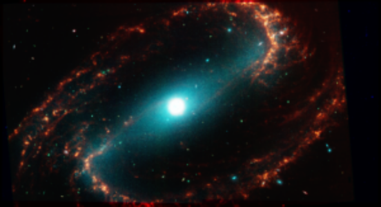
2022-07-29 NGC628-NIRCAM, available filters: [115 187 200 277 335 444]

2023-01-19 NGC-1433, available filters: [ 200 300 335 360 770 1000 1130 2100]

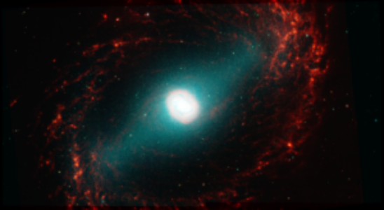
2023-01-17 NGC-4321, available filters: [ 200 300 335 360 770 1000 1130 2100]

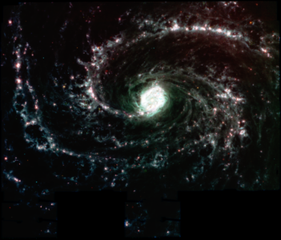
2023-01-13 NGC-3627, available filters: [ 200 300 335 360 770 1000 1130 2100]


2022-07-02 IC-4553 (not NGC), available filters: [ 90 150 200 277 356 444 770 1130 1280 1500]

2022-12-25 NGC3256-NUC1, available filters: [150 200 335 444]
2022-12-25 NGC3256-CENTERED, available filters: [ 150 200 335 444 560 770 1500]


2022-12-20 SN2021AFDX (not NGC), available filters: [1500 2100 2550]
2022-12-06 NGC-1385, available filters: [ 200 300 335 360 770 1000 1130 2100]


2022-11-22 NGC-1566, available filters: [ 200 300 335 360 770 1000 1130 2100]

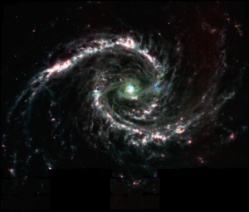
2022-09-08 LDN-1527 (not NGC), available filters: [115 187 200 335 444 470]

2022-11-03 NGC2506G31, available filters: [115 444]

2022-08-14, 2022-08-30 M-16 (NGC-6611), available filters: [ 90 187 200 335 444 470 770 1130 1500]

2022-09-10 ORIBAR-IMAGING-NIRCAM (NGC-1976), available filters: [140 162 164 182 187 210 212 277 300 335 444 470 480]

2022-09-18 ORIBAR-IMAGING-MIRI (NGC-1976), available filters: [ 187 212 300 410 770 1130]
2022-09-11 ORIBAR-IMAGING-MIRI (NGC-1976), available filters: [ 335 444 1500 2550]
2022-06-02 NGC-2070, available filters: [ 90 187 200 335 444 470]

2022-08-13 NGC-1365, available filters: [ 200 300 335 360 770 1000 1130 2100]

2022-08-03 NGC-5139, available filters: [212 470]

2022-07-29 VV114-CENTERED (not NGC), available filters: [150 200 356 444]
2022-07-27 WR140 (not NGC), available filters: [ 770 1500 2100]
2022-07-17 NGC-628, available filters: [ 200 300 335 360 770 1000 1130 2100]


2022-07-02 VV114-CENTERED (not NGC), available filters: [ 560 770 1500]

2022-05-13 GALACTICPLANE2 (not NGC), available filters: [ 70 115 150 277]
2022-07-02 VV114-NUC (not NGC), available filters: [ 560 770 1500]

2022-07-04 WR140MRSCAL (not NGC), available filters: [ 560 1000 2100]
2022-06-04 NGC-6543, available filters: [ 770 1280]

2022-06-22 NGC-7469, available filters: [ 560 770 1500]
2022-07-01 NGC-7469, available filters: [ 150 200 335 444 560 770 1500]


2022-07-04 NGC-7469-MRS (IC 5283), available filters: [ 560 770 1500]
 MIRI")
2022-06-03, 2022-06-11 NGC-3324, available filters: [ 90 187 200 335 444 470 770 1130 1280 1800]

2022-06-03, 2022-06-11 NGC-7320, available filters: [ 90 150 200 277 356 444 770 1000 1500]

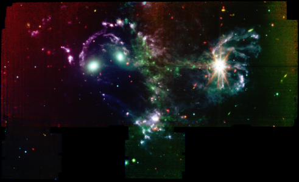
2022-06-03, 2022-06-12 NGC-3132, available filters: [ 90 187 212 356 444 470 770 1130 1280 1800]